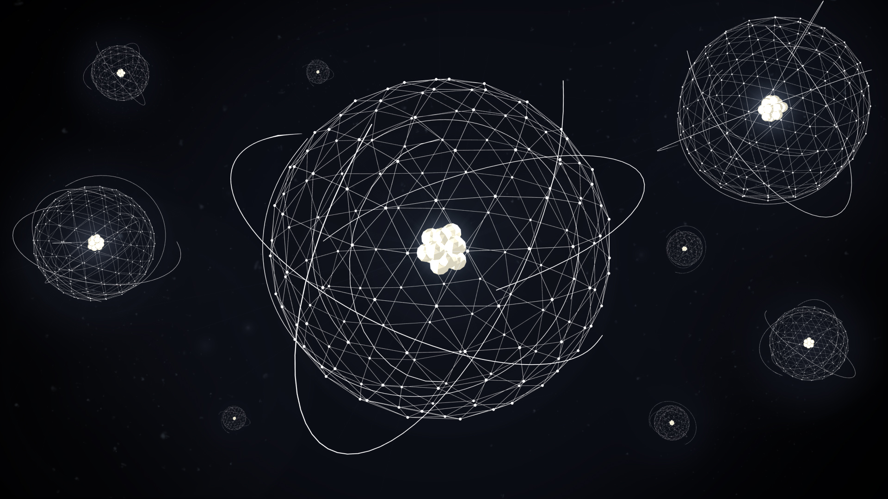

Abstract:
During my years of high-school I wasn't too inspired to put effort into studying by the environment I had to be in.
By the time I finished my higher vocational training in uni around 2020 I spent close to 2 years of my life finding a way to study the least amount I could.
When I enlisted to bSC in 2021 july, I was met with far greater challenges that I have ever encountered before.
I was struggling and it wasn't fun. Giving up felt like a choice, but it wasn't an option.
So why physics? The same reason why I chose C++ as my programming language.
People are ever so afraid of this "difficult" subject. The select few who actually love the gist of what physics is about are the same people I aspire to be.
My goal is to show you that physics can be quite simple if you know the algorithm of thinking.
Physics, what is it about?
Physics to me is a way of describing our real world in the language of mathematics.
However, if that would be all I would have never written this guide to begin with.
We literally have the power to calculate the weight of our home planet just through some formulas without ever weighing it ourselves!
We can measure and give meaning to the speed of light.
Have you ever wondered how granted we take it when we push a simple chair, and it moves?
With physics we can best describe what and how, but especially why it happens.
Too relevant right? What about figuring out the speed of an electron around the proton in the ways of the atom?
How about figuring out how electricity will behave in any man-made circuitry?
Even the screen you are reading the current text from, and the computer the screen is connected to is acting by the laws of physics.
That's not all.
We could literally simulate an entire virtual world through the power of physics!
Physics engines in a nutshell are a huge undertaking of programs which handle the calculations for physics in video games. They aim to simulate and make some games behave just like it would in our real world.
What about space travel? Without, physics we would have never even travelled to another planet, whether real or virtual!
All these exist because we made it so, and by learning physics and opening towards science I hope you will find meaning.
Not so fast though, first we need to learn the basics.
Why do we condemn physics hard?
"Humans on the most basic level are lazy creatures." said my favorite professor during one of the lectures.
We like to invest the least energy into work, but we except high results no matter our invested energy.
While most judge physics by the very limited effort they have ever put into learning the topic for many people the level of abstraction they must face when they encounter physics is unlike anything else they have seen before.
In our scenario by abstraction we refer to mathematics.
But what does mathematics, a completely different aspect of science has to do with physics to begin with?
Well its quite simple, the love language of physics is mathematics.
To give you and idea, I will show you through defining a common way of solving problems in physics:
- Encounter a problem whether on paper or in real life.
- Gather the data we know about our problem, find our variables.
- Draw the scenario of the problem in a way which is understandable to you.
- Read the problem again after, make sure we understood properly and the sketch is usable.
- Return to the known variables, recollect what topic the problem is about and list all known formulas which could be useful to solving the problem.
- By this step, we are finished with physics. Actually solving the problem requires you to do mathematics.
(Later on, I will also give you a detailed example about how I would go about solving a physics problem, and the layout I prefer.)
Do you see now?
Most of our steps are about gathering and understanding the information, and playing out different scenarios in your head which the problem proposes until you find the one which feels right for the context.
Of course this also means that while you can learn physics and understand all the theory, known the formulas by heart but if mathematics is troublesome to you, your enjoyment from physics will be harder to find.
Dont let that scare you through, good thing about mathematics is that while there is some theory, you can get by perfectly fine with knowing some useful formulas, and the level of entry into learning, while challenging I promise it won't be without progress. That is, if you put in the effort.
I am hoping that even if you aren't completely convinced, you will be able to start studying physics and find enjoyment in being able to.